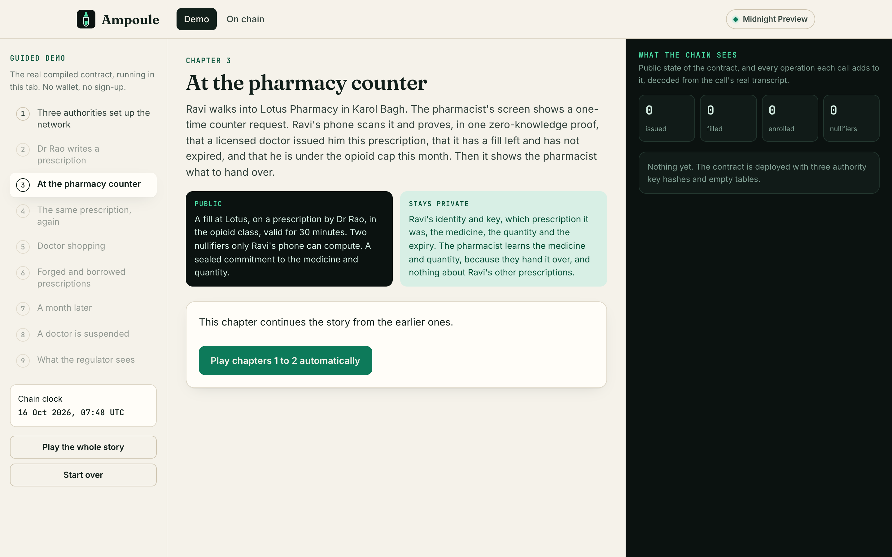
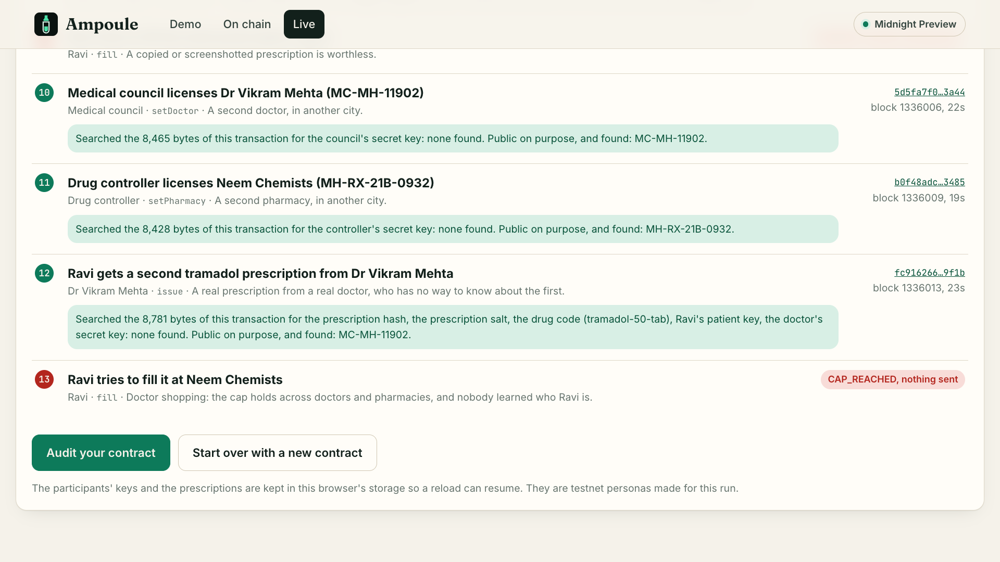
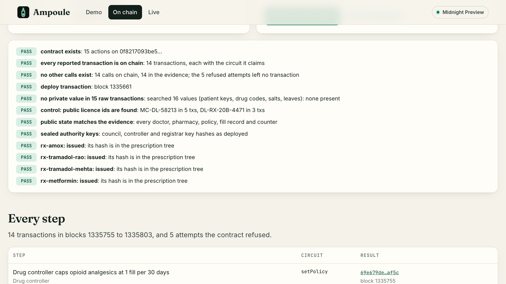

Monthly caps on opioids and other controlled drugs that hold across every doctor and every pharmacy, enforced by a Compact contract that never learns who takes what.
Tramadol after a knee injury, alprazolam for anxiety, methylphenidate for ADHD. It should stay between the patient, the doctor and the pharmacist.
The same prescription can be copied, edited, filled twice, or collected again from a second doctor and a second pharmacy. Society wants that policed.
Today a patient gets one or the other: rules that are easy to beat, or rules enforced by a list of everyone on painkillers.
Each pharmacy sees one slip and nothing else, so doctor shopping is invisible to all of them.
of US opioid buyers obtained 1.9% of all opioid prescriptions, from 10 prescribers each on average.
Every Indian pharmacy keeps a Schedule H1 register: the patient's name, the drug and the quantity for each listed sale, kept for three years. No other pharmacy can see it.
US states let police query the prescription monitoring database without a warrant.
McDonald and Carlson, PLOS ONE 2013 (2008 data). Drugs and Cosmetics Rules, 1945, Schedule H1 (2013). ACLU on prescription drug monitoring programs. Full list in docs/ADOPTION.md.
A copied or screenshotted prescription is refused everywhere: ALREADY_FILLED.
One opioid fill per 30 days from any doctor at any pharmacy: CAP_REACHED.
Suspend a doctor and every open prescription they wrote stops at once: DOCTOR_SUSPENDED.
The chain never sees who the patient is, the drug, the quantity, the expiry date, or anything that links two fills by one person. Refused attempts never reach it at all.
Proves the key the medical council registered for this licence, and appends one hash of the prescription to a Merkle tree.
Receives the prescription as a QR code, like the paper slip. It is bound to the phone's patient key.
Shows a QR with its licence number and a one-time challenge.
The phone proves every rule in one transaction. Two nullifiers and a sealed record are written. Nothing else.
The phone opens the sealed record for the pharmacist alone: exactly this drug, this quantity. Hand it over.
The doctor sees what they prescribe and the pharmacist sees what they hand over. The ledger sees licence numbers, a drug class and hashes.
Only the patient's secret can make these nullifiers, so two fills by one person look like fills by two people.
| Public ledger | Patient's phone | Pharmacy | |
|---|---|---|---|
| Who the patient is | Never | Holds the secret | Never |
| Medicine and quantity | A sealed commitment | Yes | At the counter, to hand it over |
| Expiry date | Never (a 30-minute deadline only) | Yes | No |
| Prescribing doctor | Licence number | Yes | Licence number |
| Drug class | Yes, for volume statistics | Yes | Yes |
| The patient's other prescriptions | Never | Yes | Never |
Every value on the ledger passes through disclose() in the contract. docs/PRIVACY-BOUNDARY.md checks it line by line.
The cap has to hold across pharmacies that do not trust each other. Trees, nullifiers and fill records live on Midnight's public ledger.
The patient's secret and the prescription stay in private state on the phone. Compact proves the rules over them and publishes only what disclose() marks.
Doctors, authorities and patients prove a secret whose hash is on the ledger. Whoever pays the DUST fee learns nothing and links nothing.
A fraudulent fill fails on the caller's device while the circuit runs. No proof, no transaction, no fee, no trace.



CI recompiles the contract and requires the committed code to match, then runs every test, the typecheck, the build and Playwright on desktop and phone.
One SDK drives the in-browser simulator, the CLI on Preview and the Lace live page. Each participant holds only their own secret.
A public audit anyone can run, from the CLI or a button on the site, needing no wallet and no key.
License, cap and suspend with one transaction each. Get live public counts per doctor and pharmacy, and no register to guard.
One scan at the counter that covers every other pharmacy. The fill record replaces the paper register entry.
Issuing is one SDK call from e-prescription software. The patient carries a QR code, like the slip.
Business model: a fee per controlled fill paid by the pharmacy or programme, a regulator dashboard, and SDK licences for software vendors. Fees are paid in DUST, so patients never handle tokens. Sources in docs/ADOPTION.md.